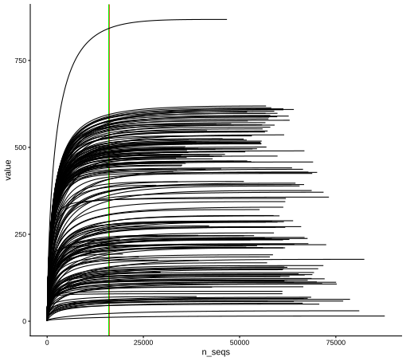
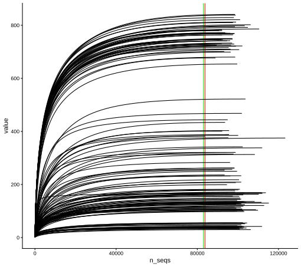

# Pkg -----#library(DESeq2) #use bioconductor to install it with BiocManagerlibrary(ggpubr)library(rstatix)library(broom)library(ggplot2)library(multcompView)library(ggrepel)library(ggpattern)library(readxl)library(tidyverse)library(dplyr)library(knitr)library(kableExtra)library(FactoMineR)library(qiime2R) #remotes::install_github("jbisanz/qiime2R") # current version is 0.99.20 or if (!requireNamespace("devtools", quietly = TRUE)){install.packages("devtools")}#devtools::install_github("jbisanz/qiime2R")library(vegan)library(phyloseq)library(sjPlot) #https://cran.r-project.org/web/packages/sjPlot/vignettes/tab_model_estimates.htmllibrary(pscl)library(patchwork)library(ggtext) #install.packages("ggtext")library(RColorBrewer)library(zCompositions)library(lme4)library(emmeans)library(readxl)library(metacoder) # devtools::install_github("grunwaldlab/metacoder") # need rtoolslibrary(foreach)library(doParallel)library(ggrepel)library(forcats)library(scales)library(patchwork)library(knitr)library(colorspace)library(gplots)#library(edgeR) #I hope i not need that#library(ade4TkGUI) #install.packages("ade4TkGUI")library(statmod)library(ComplexUpset)library(paletteer) # function ---- source(here::here("src/function/collect_mcom_counts.R"))# cosmetics ----my_color_palette <-read_excel(here::here("data/color_palette.xlsm"))set.seed(1) # set seed for analysis reproducibility
Importation of the data frame taxonomy from qza file
Importation of the data frame phylogenetic unrooted or rooted from qza file
#Upload your QZA file containing the phylogenetic tree#<- "data/test2/rooted-tree.qza"df_16S_rooted_tree<-read_qza(here::here("data/mcom/rooted_tree_phylogeny_16S_soybean_2021.qza"))$datadf_16S_unrooted_tree<-read_qza(here::here("data/mcom/unrooted_tree_phylogeny_16S_soybean_2021.qza"))$data#<- "data/test2/rooted-tree.qza"df_ITS_rooted_tree<-read_qza(here::here("data/mcom/rooted_tree_phylogeny_ITS_soybean_2021.qza"))$datadf_ITS_unrooted_tree<-read_qza(here::here("data/mcom/unrooted_tree_phylogeny_ITS_soybean_2021.qza"))$data#physeq <- merge_phyloseq(phyloseq_16S, tree)
Importation of the data frame count and creation of a dataframe including ASVs linked to cyanobacteria and mitochondria (for 16S)
# colnames(feature_table)[1] ="ASV_ID"df_16S_count_chlorophyll_mito <-read.csv(here::here("data/mcom/asv_table_16S_soybean_2021.csv"), sep="\t",skip =1) %>% dplyr::rename_at(vars(starts_with("X")), #delet the A at the beginning ~substring(.x,2)) %>% dplyr::rename( "ASV"=".OTU.ID") %>%#rename first column dplyr::rename_at(vars(ends_with(".effective.fastq")),~sub("\\.\\.?effective\\.fastq$","", .x))df_16S_data_loss<-collect_mcom_counts(df_i = df_16S_count_chlorophyll_mito %>%column_to_rownames("ASV"),new_column_name ="raw_data_with_chloro_and_mito")
Creation of a dataframe without cyanobacteria (which are actually chlorophilic contaminants) during sequencing and without mitochondria (for 16S sequence).
df_ITS_count <-read.csv(here::here("data/mcom/asv_table_ITS_soybean_2021.csv"), sep="\t",skip =1) %>% dplyr::rename_at(vars(starts_with("X")), #delet the A at the beginning ~substring(.x,2)) %>% dplyr::rename( "ASV"=".OTU.ID") %>%#rename first column dplyr::rename_at(vars(ends_with(".effective.fastq")),~sub("\\.\\.?effective\\.fastq$","", .x)) %>%column_to_rownames("ASV")
Create metadata file and add compartment information
# for 16Sdf_16S_metadata<-data.frame(sample_name=colnames(df_16S_count)) %>%mutate(compartment=substr(sample_name,nchar(sample_name) -1,nchar(sample_name))) %>%#Add column compartment using last two value from rownames and add plant_num by using the number contain in the rownamesmutate(plant_num=as.numeric(unlist(str_extract_all(sample_name, "\\d+")))) %>%inner_join(.,read_xlsx(here::here("data/plant_information.xlsx")) %>% dplyr::select("plant_num","condition","genotype","water_condition","heat_condition"), by="plant_num") %>%mutate(compartment_l =case_when( compartment =="lo"~"Phylloplane", compartment =="li"~"Leaf endosphere", compartment =="ri"~"Root endosphere", compartment =="ro"~"Rhizoplane", compartment =="rh"~"Rhizosphere", compartment =="bk"~"Bulk soil",TRUE~NA_character_# Keep the original value if none of the conditions match )) %>%mutate(climat_condition=paste0(water_condition,"_",heat_condition)) %>%mutate(climat_condition=factor(climat_condition,levels=c("WW_OT","WS_OT","WW_HS","WS_HS"))) %>%mutate(compartment_l=factor(compartment_l,levels=c("Phylloplane","Leaf endosphere","Root endosphere","Rhizoplane","Rhizosphere","Bulk soil")))# For ITSdf_ITS_metadata<-data.frame(sample_name=colnames(df_ITS_count)) %>%mutate(compartment=substr(sample_name,nchar(sample_name) -1,nchar(sample_name))) %>%#Add column compartment using last two value from rownames and add plant_num by using the number contain in the rownamesmutate(plant_num=as.numeric(unlist(str_extract_all(sample_name, "\\d+")))) %>%inner_join(.,read_xlsx(here::here("data/plant_information.xlsx")) %>% dplyr::select("plant_num","condition","genotype","water_condition","heat_condition"), by="plant_num") %>%mutate(compartment_l =case_when( compartment =="lo"~"Phylloplane", compartment =="li"~"Leaf endosphere", compartment =="ri"~"Root endosphere", compartment =="ro"~"Rhizoplane", compartment =="rh"~"Rhizosphere", compartment =="bk"~"Bulk soil",TRUE~NA_character_# Keep the original value if none of the conditions match )) %>%mutate(climat_condition=paste0(water_condition,"_",heat_condition)) %>%mutate(climat_condition=factor(climat_condition,levels=c("WW_OT","WS_OT","WW_HS","WS_HS"))) %>%mutate(compartment_l=factor(compartment_l,levels=c("Phylloplane","Leaf endosphere","Root endosphere","Rhizoplane","Rhizosphere","Bulk soil")))
For 16S there is a total of 240 samples and 7471 ASV at this step and a total of 1.056717e+07 count.
For ITS there is a total of 144 samples and 7235 ASV at this step and a total of 1.428166e+07 count.
Observation of information loss for each stage for 16S
#Update of the medadatadf_16S_metadata=df_16S_metadata %>%inner_join(data.frame(sample_name = df_16S_count %>%t() %>%as.data.frame() %>%rownames_to_column("sample_name") %>%pull(sample_name)), by ="sample_name") %>%mutate(compartment_l=factor(compartment_l,levels=c("Phylloplane","Root endosphere","Rhizoplane","Rhizosphere","Bulk soil")))save(df_16S_metadata,file=here::here(paste0("data/mcom/output/save/df_16S_metadata_importation_amplicon.RData")))
Microbial ecologists explore sequencing depth though a rarefaction curve. The rarefaction curve shows how many new ASVs are observed when we obtain new reads for a given sample. If the sequencing depth is enough, we should observe a plateau, meaning that even if we sequence new reads they will belong to ASVs already observed. In other word, all the diversity present in a sample is already described and we have sequenced the community deeply enough. This analysis should be execute on the raw data.
rarecurve_data=vegan::rarecurve(df_16S_count %>%t(), step =100, cex =0.75, las =1) rarecurve_data_ITS=vegan::rarecurve(df_ITS_count %>%t(), step =100, cex =0.75, las =1) min_n_seqs=min( df_16S_count %>%rownames_to_column("ASV") %>%pivot_longer(-ASV, names_to ="sample_name", values_to ="count") %>% dplyr::group_by(sample_name) %>% dplyr::summarise(total=sum(count)) %>%pull(total) )min_n_seqs_ITS=min( df_ITS_count %>%rownames_to_column("ASV") %>%pivot_longer(-ASV, names_to ="sample_name", values_to ="count") %>% dplyr::group_by(sample_name) %>% dplyr::summarise(total=sum(count)) %>%pull(total) )PlotAlpha_rarefaction<-map_dfr(rarecurve_data,bind_rows) %>%bind_cols(Group=rownames(df_16S_count %>%t()),.) %>%pivot_longer(-Group) %>%drop_na() %>%mutate(n_seqs=as.numeric(str_replace(name,"N",""))) %>% dplyr::select(-name) %>%ggplot(aes(x=n_seqs,y=value,group=Group))+geom_vline (xintercept=min_n_seqs,color="red")+geom_vline (xintercept=16000,color="green")+geom_line()+theme_classic()PlotAlpha_rarefaction_ITS<-map_dfr(rarecurve_data_ITS,bind_rows) %>%bind_cols(Group=rownames(df_ITS_count %>%t()),.) %>%pivot_longer(-Group) %>%drop_na() %>%mutate(n_seqs=as.numeric(str_replace(name,"N",""))) %>% dplyr::select(-name) %>%ggplot(aes(x=n_seqs,y=value,group=Group))+geom_vline (xintercept=min_n_seqs_ITS,color="red")+geom_vline (xintercept=83000,color="green")+geom_line()+theme_classic()ggsave(here::here("report/plot/Rarecurve_all.svg"),PlotAlpha_rarefaction ,width =18,height =16, units ="cm")ggsave(here::here("report/plot/Rarecurve_all_ITS.svg"),PlotAlpha_rarefaction_ITS ,width =18,height =16, units ="cm")# Same but for each compartmentsource(here::here("src/function/f_rarecurve_compartment.R"))# for 16SPlotsAlphaCompartment=rarecurve_compartment("lo")+# rarecurve_compartment("li")+rarecurve_compartment("ri")+rarecurve_compartment("ro")+rarecurve_compartment("rh")+rarecurve_compartment("bk")+#guide_area() + #tres utile pour mettre dans un trou pour ne pas perdre de place #plot_annotation(tag_levels = 'A')+plot_layout(ncol =2) # for ITSPlotsAlphaCompartment_ITS=rarecurve_compartment("lo",type ="ITS")+rarecurve_compartment("li", type ="ITS")+rarecurve_compartment("ri", type ="ITS")+rarecurve_compartment("ro", type ="ITS")+rarecurve_compartment("rh", type ="ITS")+rarecurve_compartment("bk", type ="ITS")+#guide_area() + #tres utile pour mettre dans un trou pour ne pas perdre de place #plot_annotation(tag_levels = 'A')+plot_layout(ncol =2) #export ggsave(here::here("report/plot/Rarecurve_compartment.svg"),PlotsAlphaCompartment ,width =29,height =28, units ="cm")ggsave(here::here("report/plot/Rarecurve_compartment_ITS.svg"),PlotsAlphaCompartment_ITS ,width =29,height =28, units ="cm")
# export data for next script ## For 16Ssave(df_16S_count,file=here::here(paste0("data/mcom/output/save/df_16S_count_importation_amplicon.RData")))save(df_16S_data_loss,file=here::here(paste0("data/mcom/output/save/df_16S_data_loss_importation_amplicon.RData")))save(df_16S_metadata,file=here::here(paste0("data/mcom/output/save/df_16S_metadata_importation_amplicon.RData")))save(df_16S_taxonomy,file=here::here(paste0("data/mcom/output/save/df_16S_taxonomy_importation_amplicon.RData")))save(df_16S_rooted_tree,file=here::here(paste0("data/mcom/output/save/df_16S_rooted_tree_importation_amplicon.RData"))) # not use in this script but after## For ITSsave(df_ITS_count,file=here::here(paste0("data/mcom/output/save/df_ITS_count_importation_amplicon.RData")))save(df_ITS_metadata,file=here::here(paste0("data/mcom/output/save/df_ITS_metadata_importation_amplicon.RData")))save(df_ITS_taxonomy,file=here::here(paste0("data/mcom/output/save/df_ITS_taxonomy_importation_amplicon.RData")))save(df_ITS_rooted_tree,file=here::here(paste0("data/mcom/output/save/df_ITS_rooted_tree_importation_amplicon.RData"))) # not use in this script but after


Source Code
---output: html_documenteditor_options: chunk_output_type: console---## Data importation & rarefaction```{r}# Pkg install -----packages <-c("ggpubr", "rstatix", "broom", "ggplot2", "multcompView", "ggrepel", "ggpattern","readxl", "tidyverse", "dplyr", "knitr", "kableExtra", "FactoMineR", "vegan","phyloseq", "sjPlot", "pscl", "patchwork", "ggtext", "RColorBrewer","zCompositions", "lme4", "emmeans", "metacoder", "foreach", "doParallel","forcats", "scales", "colorspace", "gplots", "statmod", "ComplexUpset","paletteer")install.packages(setdiff(packages, installed.packages()[,"Package"]))if (!requireNamespace("devtools", quietly =TRUE)) install.packages("devtools")# qiime2R et metacoder depuis GitHubdevtools::install_github("jbisanz/qiime2R")devtools::install_github("grunwaldlab/metacoder")lapply(packages, library, character.only =TRUE)# Pkg -----#library(DESeq2) #use bioconductor to install it with BiocManagerlibrary(ggpubr)library(rstatix)library(broom)library(ggplot2)library(multcompView)library(ggrepel)library(ggpattern)library(readxl)library(tidyverse)library(dplyr)library(knitr)library(kableExtra)library(FactoMineR)library(qiime2R) #remotes::install_github("jbisanz/qiime2R") # current version is 0.99.20 or if (!requireNamespace("devtools", quietly = TRUE)){install.packages("devtools")}#devtools::install_github("jbisanz/qiime2R")library(vegan)library(phyloseq)library(sjPlot) #https://cran.r-project.org/web/packages/sjPlot/vignettes/tab_model_estimates.htmllibrary(pscl)library(patchwork)library(ggtext) #install.packages("ggtext")library(RColorBrewer)library(zCompositions)library(lme4)library(emmeans)library(readxl)library(metacoder) # devtools::install_github("grunwaldlab/metacoder") # need rtoolslibrary(foreach)library(doParallel)library(ggrepel)library(forcats)library(scales)library(patchwork)library(knitr)library(colorspace)library(gplots)#library(edgeR) #I hope i not need that#library(ade4TkGUI) #install.packages("ade4TkGUI")library(statmod)library(ComplexUpset)library(paletteer) # function ---- source(here::here("src/function/collect_mcom_counts.R"))# cosmetics ----my_color_palette <-read_excel(here::here("data/color_palette.xlsm"))set.seed(1) # set seed for analysis reproducibility```- Importation of the data frame taxonomy from qza file```{r,TaxImport}df_16S_taxonomy<-parse_taxonomy(read_qza(here::here("data/mcom/taxonomy_16S_soybean_2021.qza"))$data) %>% dplyr::mutate(Kingdom=substr(Kingdom,4,nchar(Kingdom))) %>%rename_all(tolower) %>%rownames_to_column("ASV")df_ITS_taxonomy<-parse_taxonomy(read_qza(here::here("data/mcom/taxonomy_ITS_soybean_2021.qza"))$data) %>% dplyr::mutate(Kingdom=substr(Kingdom,4,nchar(Kingdom))) %>%rename_all(tolower) %>%rownames_to_column("ASV")```- Importation of the data frame phylogenetic unrooted or rooted from qza file```{r,PhylogenyImportation, eval=T}#Upload your QZA file containing the phylogenetic tree#<- "data/test2/rooted-tree.qza"df_16S_rooted_tree<-read_qza(here::here("data/mcom/rooted_tree_phylogeny_16S_soybean_2021.qza"))$datadf_16S_unrooted_tree<-read_qza(here::here("data/mcom/unrooted_tree_phylogeny_16S_soybean_2021.qza"))$data#<- "data/test2/rooted-tree.qza"df_ITS_rooted_tree<-read_qza(here::here("data/mcom/rooted_tree_phylogeny_ITS_soybean_2021.qza"))$datadf_ITS_unrooted_tree<-read_qza(here::here("data/mcom/unrooted_tree_phylogeny_ITS_soybean_2021.qza"))$data#physeq <- merge_phyloseq(phyloseq_16S, tree)```- Importation of the data frame count and creation of a dataframe including ASVs linked to cyanobacteria and mitochondria (for 16S)```{r, RenameColumn}# colnames(feature_table)[1] ="ASV_ID"df_16S_count_chlorophyll_mito <-read.csv(here::here("data/mcom/asv_table_16S_soybean_2021.csv"), sep="\t",skip =1) %>% dplyr::rename_at(vars(starts_with("X")), #delet the A at the beginning ~substring(.x,2)) %>% dplyr::rename( "ASV"=".OTU.ID") %>%#rename first column dplyr::rename_at(vars(ends_with(".effective.fastq")),~sub("\\.\\.?effective\\.fastq$","", .x))df_16S_data_loss<-collect_mcom_counts(df_i = df_16S_count_chlorophyll_mito %>%column_to_rownames("ASV"),new_column_name ="raw_data_with_chloro_and_mito")```- Creation of a dataframe without cyanobacteria (which are actually chlorophilic contaminants) during sequencing and without mitochondria (for 16S sequence).```{r,CreationdfCountWithoutCyano}df_16S_count_chlorophyll_mito <- df_16S_count_chlorophyll_mito %>%anti_join(data.frame(ASV = df_16S_taxonomy %>%filter(phylum =="Cyanobacteria") %>%pull("ASV")), by ="ASV") %>%as.data.frame() %>%column_to_rownames("ASV")# sum(as.matrix(df_16S_count[,2:length(df_16S_count)]))# length(df_16S_count)df_16S_data_loss<-collect_mcom_counts(storage = df_16S_data_loss, df_i = df_16S_count_chlorophyll_mito,new_column_name ="raw_without_Cyanobacteria_phylum")df_16S_count_mito <- df_16S_count_chlorophyll_mito %>%rownames_to_column("ASV") %>%anti_join(data.frame(ASV = df_16S_taxonomy %>%filter(genus =="Chloroplast") %>%pull("ASV")), by ="ASV") %>%as.data.frame() %>%column_to_rownames("ASV")# sum(as.matrix(df_16S_count_mito[,2:length(df_16S_count_mito)]))# length(df_16S_count_mito)df_16S_data_loss<-collect_mcom_counts(storage = df_16S_data_loss, df_i = df_16S_count_mito,new_column_name ="raw_without_Chloroplast_genus")df_16S_count <- df_16S_count_mito %>%rownames_to_column("ASV") %>%anti_join(data.frame(ASV = df_16S_taxonomy %>%filter(genus =="Mitochondria") %>%pull("ASV")), by ="ASV") %>%as.data.frame() %>%column_to_rownames("ASV")# sum(as.matrix(df_16S_count[,2:length(df_16S_count)]))# length(df_16S_count)df_16S_data_loss<-collect_mcom_counts(storage = df_16S_data_loss, df_i = df_16S_count,new_column_name ="raw_without_mitochondria_genus")```- Creation of dataframe for fungi (ITS)```{r}df_ITS_count <-read.csv(here::here("data/mcom/asv_table_ITS_soybean_2021.csv"), sep="\t",skip =1) %>% dplyr::rename_at(vars(starts_with("X")), #delet the A at the beginning ~substring(.x,2)) %>% dplyr::rename( "ASV"=".OTU.ID") %>%#rename first column dplyr::rename_at(vars(ends_with(".effective.fastq")),~sub("\\.\\.?effective\\.fastq$","", .x)) %>%column_to_rownames("ASV")```- Create metadata file and add compartment information```{r, CreationMetadata}# for 16Sdf_16S_metadata<-data.frame(sample_name=colnames(df_16S_count)) %>%mutate(compartment=substr(sample_name,nchar(sample_name) -1,nchar(sample_name))) %>%#Add column compartment using last two value from rownames and add plant_num by using the number contain in the rownamesmutate(plant_num=as.numeric(unlist(str_extract_all(sample_name, "\\d+")))) %>%inner_join(.,read_xlsx(here::here("data/plant_information.xlsx")) %>% dplyr::select("plant_num","condition","genotype","water_condition","heat_condition"), by="plant_num") %>%mutate(compartment_l =case_when( compartment =="lo"~"Phylloplane", compartment =="li"~"Leaf endosphere", compartment =="ri"~"Root endosphere", compartment =="ro"~"Rhizoplane", compartment =="rh"~"Rhizosphere", compartment =="bk"~"Bulk soil",TRUE~NA_character_# Keep the original value if none of the conditions match )) %>%mutate(climat_condition=paste0(water_condition,"_",heat_condition)) %>%mutate(climat_condition=factor(climat_condition,levels=c("WW_OT","WS_OT","WW_HS","WS_HS"))) %>%mutate(compartment_l=factor(compartment_l,levels=c("Phylloplane","Leaf endosphere","Root endosphere","Rhizoplane","Rhizosphere","Bulk soil")))# For ITSdf_ITS_metadata<-data.frame(sample_name=colnames(df_ITS_count)) %>%mutate(compartment=substr(sample_name,nchar(sample_name) -1,nchar(sample_name))) %>%#Add column compartment using last two value from rownames and add plant_num by using the number contain in the rownamesmutate(plant_num=as.numeric(unlist(str_extract_all(sample_name, "\\d+")))) %>%inner_join(.,read_xlsx(here::here("data/plant_information.xlsx")) %>% dplyr::select("plant_num","condition","genotype","water_condition","heat_condition"), by="plant_num") %>%mutate(compartment_l =case_when( compartment =="lo"~"Phylloplane", compartment =="li"~"Leaf endosphere", compartment =="ri"~"Root endosphere", compartment =="ro"~"Rhizoplane", compartment =="rh"~"Rhizosphere", compartment =="bk"~"Bulk soil",TRUE~NA_character_# Keep the original value if none of the conditions match )) %>%mutate(climat_condition=paste0(water_condition,"_",heat_condition)) %>%mutate(climat_condition=factor(climat_condition,levels=c("WW_OT","WS_OT","WW_HS","WS_HS"))) %>%mutate(compartment_l=factor(compartment_l,levels=c("Phylloplane","Leaf endosphere","Root endosphere","Rhizoplane","Rhizosphere","Bulk soil")))```For 16S there is a total of **`r dim(df_16S_count)[2]`** samples and **`r dim(df_16S_count)[1]`** ASV at this step and a total of **`r format(sum(as.matrix(df_16S_count[,2:length(df_16S_count)])), scientific=TRUE)`** count.For ITS there is a total of **`r dim(df_ITS_count)[2]`** samples and **`r dim(df_ITS_count)[1]`** ASV at this step and a total of **`r format(sum(as.matrix(df_ITS_count[,2:length(df_ITS_count)])), scientific=TRUE)`** count.- Observation of information loss for each stage for 16S```{r, LossInfo, eval=F}plot_x=df_16S_data_loss %>%pivot_longer(-sample_name,names_to ="step",values_to ='count') %>%left_join(.,df_16S_metadata, by="sample_name") %>% dplyr::group_by(compartment_l,step) %>% dplyr::summarise(mean_count =mean(count),N=n(),sd=sd(count),se=sd(count)/sqrt(N),.groups ="drop") %>%ggplot(aes(x=step,y=mean_count,col=compartment_l,group = compartment_l))+geom_errorbar(aes(ymin=mean_count-se,ymax=mean_count+se),width =0.2,position =position_dodge(width =0.2)) +geom_line(position =position_dodge(width =0.2)) +geom_point(position =position_dodge(width =0.2))+guides(col =guide_legend(title ="Compartment"))+theme_minimal() +theme(axis.text.x =element_text(angle =90, hjust =1,vjust =0.2))+scale_color_manual(values = my_color_palette %>%filter(set=="compartment") %>%pull(color),name=c(my_color_palette %>%filter(set=="compartment") %>% dplyr::select(treatment) %>%pull(treatment)) )ggsave("report/plot/loos_Each_step.svg", plot_x, width =11,height =11, units ="cm")```## Alpha-diversity```{r, FilterLowCount1}df_16S_count=df_16S_count %>%rownames_to_column("ASV") %>%pivot_longer(-ASV, names_to ="sample_name", values_to ="count") %>%filter(!sample_name %in%c("74bisro","1094rh","1118ri","1060ri","1046li")) %>% dplyr::group_by(sample_name) %>%mutate(total=sum(count)) %>%filter(total>16000) %>% dplyr::group_by(ASV) %>%mutate(total=sum(count)) %>%filter(total!=0) %>%ungroup() %>% dplyr::select(-total) %>%pivot_wider(names_from ="sample_name", values_from ="count") %>%column_to_rownames("ASV")df_16S_data_loss<-collect_mcom_counts(storage = df_16S_data_loss, df_i = df_16S_count,new_column_name ="raw_first_filter")## test=df_16S_data_loss %>%# pivot_longer(-sample_name,names_to = "step",values_to = 'count') %>%# left_join(.,df_16S_metadata, by="sample_name") %>%# filter(step=="raw_first_filter") %>%# drop_na(count) %>%# dplyr::group_by(compartment_l,condition) %>%# dplyr::summarise(mean_count = mean(count,na.rm = TRUE),# N=n(),# sd=sd(count,na.rm = TRUE),# se=sd(count,na.rm = TRUE)/sqrt(N),# min=min(count),# .groups = "drop")save(df_16S_count,file=here::here(paste0("data/mcom/output/save/df_16S_count_importation_amplicon.RData")))save(df_16S_data_loss,file=here::here(paste0("data/mcom/output/save/df_16S_data_loss_importation_amplicon.RData")))``````{r,UpdateMetadata}#Update of the medadatadf_16S_metadata=df_16S_metadata %>%inner_join(data.frame(sample_name = df_16S_count %>%t() %>%as.data.frame() %>%rownames_to_column("sample_name") %>%pull(sample_name)), by ="sample_name") %>%mutate(compartment_l=factor(compartment_l,levels=c("Phylloplane","Root endosphere","Rhizoplane","Rhizosphere","Bulk soil")))save(df_16S_metadata,file=here::here(paste0("data/mcom/output/save/df_16S_metadata_importation_amplicon.RData")))```Microbial ecologists explore sequencing depth though a rarefaction curve. The rarefaction curve shows how many new ASVs are observed when we obtain new reads for a given sample. If the sequencing depth is enough, we should observe a plateau, meaning that even if we sequence new reads they will belong to ASVs already observed. In other word, all the diversity present in a sample is already described and we have sequenced the community deeply enough. This analysis should be execute on the raw data.```{r, rarecurve, eval=F}rarecurve_data=vegan::rarecurve(df_16S_count %>%t(), step =100, cex =0.75, las =1) rarecurve_data_ITS=vegan::rarecurve(df_ITS_count %>%t(), step =100, cex =0.75, las =1) min_n_seqs=min( df_16S_count %>%rownames_to_column("ASV") %>%pivot_longer(-ASV, names_to ="sample_name", values_to ="count") %>% dplyr::group_by(sample_name) %>% dplyr::summarise(total=sum(count)) %>%pull(total) )min_n_seqs_ITS=min( df_ITS_count %>%rownames_to_column("ASV") %>%pivot_longer(-ASV, names_to ="sample_name", values_to ="count") %>% dplyr::group_by(sample_name) %>% dplyr::summarise(total=sum(count)) %>%pull(total) )PlotAlpha_rarefaction<-map_dfr(rarecurve_data,bind_rows) %>%bind_cols(Group=rownames(df_16S_count %>%t()),.) %>%pivot_longer(-Group) %>%drop_na() %>%mutate(n_seqs=as.numeric(str_replace(name,"N",""))) %>% dplyr::select(-name) %>%ggplot(aes(x=n_seqs,y=value,group=Group))+geom_vline (xintercept=min_n_seqs,color="red")+geom_vline (xintercept=16000,color="green")+geom_line()+theme_classic()PlotAlpha_rarefaction_ITS<-map_dfr(rarecurve_data_ITS,bind_rows) %>%bind_cols(Group=rownames(df_ITS_count %>%t()),.) %>%pivot_longer(-Group) %>%drop_na() %>%mutate(n_seqs=as.numeric(str_replace(name,"N",""))) %>% dplyr::select(-name) %>%ggplot(aes(x=n_seqs,y=value,group=Group))+geom_vline (xintercept=min_n_seqs_ITS,color="red")+geom_vline (xintercept=83000,color="green")+geom_line()+theme_classic()ggsave(here::here("report/plot/Rarecurve_all.svg"),PlotAlpha_rarefaction ,width =18,height =16, units ="cm")ggsave(here::here("report/plot/Rarecurve_all_ITS.svg"),PlotAlpha_rarefaction_ITS ,width =18,height =16, units ="cm")# Same but for each compartmentsource(here::here("src/function/f_rarecurve_compartment.R"))# for 16SPlotsAlphaCompartment=rarecurve_compartment("lo")+# rarecurve_compartment("li")+rarecurve_compartment("ri")+rarecurve_compartment("ro")+rarecurve_compartment("rh")+rarecurve_compartment("bk")+#guide_area() + #tres utile pour mettre dans un trou pour ne pas perdre de place #plot_annotation(tag_levels = 'A')+plot_layout(ncol =2) # for ITSPlotsAlphaCompartment_ITS=rarecurve_compartment("lo",type ="ITS")+rarecurve_compartment("li", type ="ITS")+rarecurve_compartment("ri", type ="ITS")+rarecurve_compartment("ro", type ="ITS")+rarecurve_compartment("rh", type ="ITS")+rarecurve_compartment("bk", type ="ITS")+#guide_area() + #tres utile pour mettre dans un trou pour ne pas perdre de place #plot_annotation(tag_levels = 'A')+plot_layout(ncol =2) #export ggsave(here::here("report/plot/Rarecurve_compartment.svg"),PlotsAlphaCompartment ,width =29,height =28, units ="cm")ggsave(here::here("report/plot/Rarecurve_compartment_ITS.svg"),PlotsAlphaCompartment_ITS ,width =29,height =28, units ="cm")``````{r}# export data for next script ## For 16Ssave(df_16S_count,file=here::here(paste0("data/mcom/output/save/df_16S_count_importation_amplicon.RData")))save(df_16S_data_loss,file=here::here(paste0("data/mcom/output/save/df_16S_data_loss_importation_amplicon.RData")))save(df_16S_metadata,file=here::here(paste0("data/mcom/output/save/df_16S_metadata_importation_amplicon.RData")))save(df_16S_taxonomy,file=here::here(paste0("data/mcom/output/save/df_16S_taxonomy_importation_amplicon.RData")))save(df_16S_rooted_tree,file=here::here(paste0("data/mcom/output/save/df_16S_rooted_tree_importation_amplicon.RData"))) # not use in this script but after## For ITSsave(df_ITS_count,file=here::here(paste0("data/mcom/output/save/df_ITS_count_importation_amplicon.RData")))save(df_ITS_metadata,file=here::here(paste0("data/mcom/output/save/df_ITS_metadata_importation_amplicon.RData")))save(df_ITS_taxonomy,file=here::here(paste0("data/mcom/output/save/df_ITS_taxonomy_importation_amplicon.RData")))save(df_ITS_rooted_tree,file=here::here(paste0("data/mcom/output/save/df_ITS_rooted_tree_importation_amplicon.RData"))) # not use in this script but after```


{kind=link}